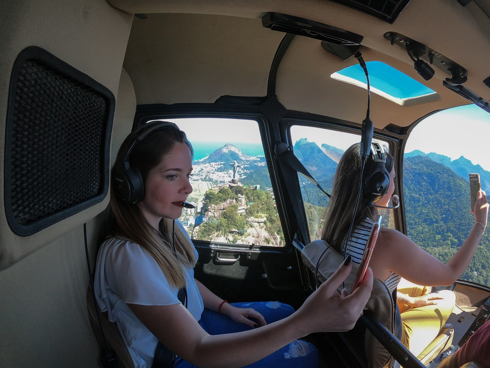
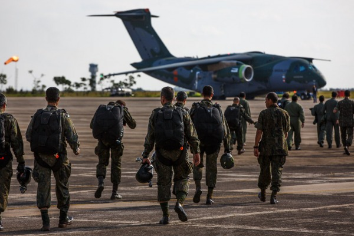
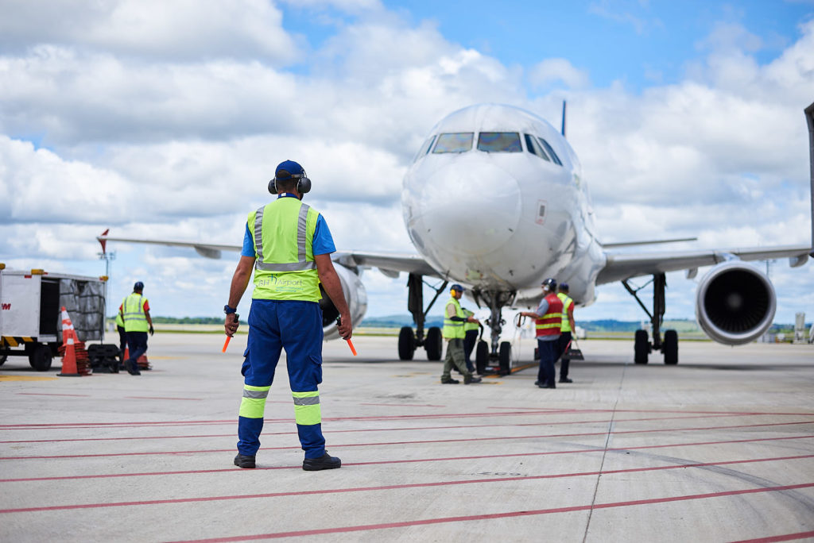

Primeiros passos na aviação
Iniciar na aviação exige disciplina, estudo e dedicação constante. O primeiro passo é ingressar
em uma escola homologada como um aeroclube, onde o aluno aprende toda a base teórica da aviação.
São estudados temas como meteorologia, navegação aérea, regras de tráfego aéreo e aerodinâmica.
Depois disso, o aluno parte para as aulas práticas, aprendendo o controle da aeronave em diferentes situações.
Como funciona um voo panorâmico

O voo panorâmico é uma experiência única que permite ao passageiro ver a cidade ou paisagens do alto.
O voo é realizado com um piloto experiente, seguindo todas as normas de segurança da aviação civil.
Durante o trajeto, é possível observar praias, áreas urbanas e pontos turísticos de uma forma completamente diferente.
Conheça nossa frota e a Brigada Paraquedista

O aeroclube possui aeronaves modernas usadas tanto para instrução quanto para voos recreativos.
Todas passam por manutenção rigorosa e seguem padrões de segurança da aviação civil.
A aviação também possui ligação com a Brigada Paraquedista, unidade de elite do Exército Brasileiro
especializada em operações aeroterrestres, conhecida pelo alto nível de treinamento e disciplina.
Segurança na aviação e formação de pilotos

A segurança na aviação é o principal pilar de toda operação aérea, sendo prioridade absoluta em aeroclubes,
companhias aéreas e forças militares. Cada voo segue protocolos rigorosos que começam ainda na formação do piloto.
Durante o treinamento, os alunos são preparados para lidar com diferentes situações de voo, incluindo condições
climáticas adversas, falhas técnicas simuladas e procedimentos de emergência.
Além disso, a aviação moderna utiliza tecnologia avançada, sistemas de navegação precisos e manutenção preventiva
constante das aeronaves, garantindo máxima segurança operacional.